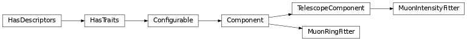

Muon image analysis¶
Algorithms for detecting and characterizing muon images
ctapipe.image.muon Package¶
Functions¶
|
Fast and reliable analytical circle fitting method previously used in the H.E.S.S. |
Classes¶
|
|
|
Different ring fit algorithms for muon rings |
Class Inheritance Diagram¶
